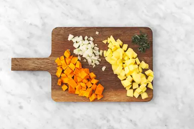
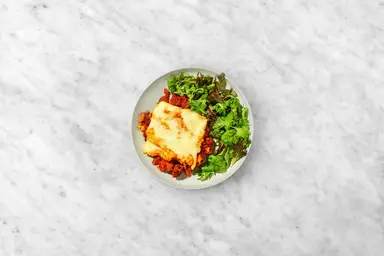

Hachis parmentier de bœuf & potimarron avec du gouda râpé & de la sauge
🧂 Ingrédients
Ajuste les quantités selon le nombre de personnes
| Ingrédient | Qté / pers. | Total | Unité |
|---|
Ingrédients à avoir chez soi
| Ingrédient | Quantité |
|---|
Étapes
-

• Préchauffez le four à 220°C sur le mode grill.
• Épluchez la quantité indiquée de potimarron avec un couteau aiguisé ou un éplucheur. Évidez-le, puis coupez-le en petits dés.
• Ciselez l'oignon et l'ail. Épluchez et coupez 200 g de pommes de terre par personne en petits dés.
• Effeuillez et ciselez la sauge.
L'ASTUCE DU CHEF : N'utilisez pas toutes les pommes de terre, sinon le ratio purée/viande sera déséquilibré. Conservez le reste pour faire une soupe ou des potatoes par exemple. -
• Placez les pommes de terre, la sauge et le potimarron dans une casserole. Couvrez d'eau à hauteur et salez, puis faites-les cuire 15-17 min, ou jusqu'à ce que la pointe d'un couteau y rentre facilement, puis égouttez-les.
• Réduisez le tout en purée avec un presse-purée.
• Ajoutez le beurre et salez et poivrez selon votre goût. Mélangez bien.
L'ASTUCE DU CHEF : Si votre purée est trop épaisse, vous pouvez ajouter un petit filet de lait pour l'onctuosité. -
• Pendant ce temps, faites chauffer un petit filet d'huile d'olive dans une poêle à feu moyen-vif. Faites-y revenir l'oignon 1-2 min.
• Ajoutez le bœuf haché, ¼ sachet de concentré de tomates par personne, le sucre et l'ail. Faites revenir le tout 3-4 min, ou jusqu'à ce que la viande soit dorée.
• Salez, poivrez, puis déglacez avec 1-2 cs d'eau par personne. -

• Dans un plat à four, répartissez la farce au bœuf.
• Étalez la purée au potimarron par-dessus et saupoudrez de gouda râpé.
• Enfournez 8-10 min dans la partie haute du four, ou jusqu'à ce que le gouda soit gratiné. -

• Dans un saladier, faites une vinaigrette en mélangeant un filet de vinaigre de vin et d'huile d’olive. Salez et poivrez.
• Juste avant de servir, ajoutez la salade et mélangez. -

• Coupez le gratin en parts pour qu'il refroidisse plus vite et servez-les dans les assiettes.
• Accompagnez-les de la salade.